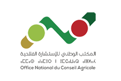
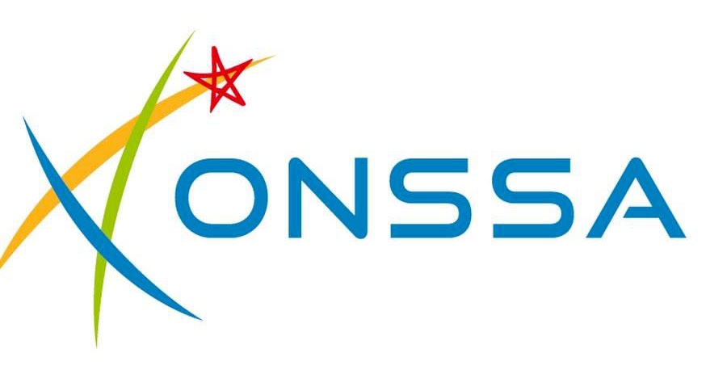
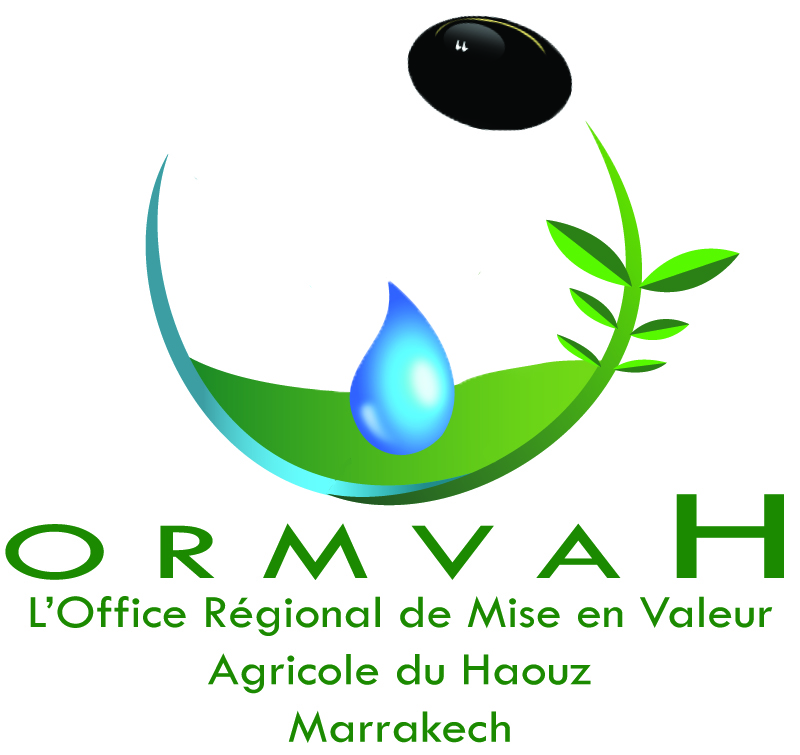
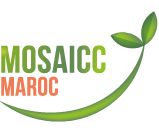
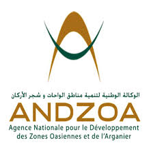
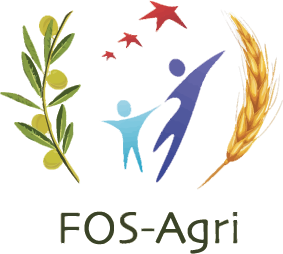
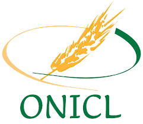
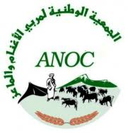

L'Office National du Conseil Agricole fournit des services de conseil et d'appui aux agriculteurs pour améliorer leurs pratiques agricoles.

L'Office National de Sécurité Sanitaire des Produits Alimentaires est un organisme public qui assure la sécurité sanitaire des aliments, des animaux, et des plantes.

L'Office Régional de Mise en Valeur Agricole du Haouz, l'un des nombreux offices régionaux chargés de la gestion et du développement des ressources agricoles dans leur région respective.

CGMS (Centre de Gestion des Moyens de l'État) est une structure du Ministère de l'Agriculture, de la Pêche Maritime, du Développement Rural et des Eaux et Forêts au Maroc. Il joue un rôle crucial dans la gestion et l'optimisation des ressources et des moyens de l'État.
L'Agence Nationale pour le Développement de l'Aquaculture se concentre sur le développement de l'aquaculture au Maroc.

MOSAICC (Système de Modélisation pour les Impacts Agricoles du Changement Climatique) est un ensemble intégré de modèles conçu pour évaluer l'impact du changement climatique sur l'agriculture.

L'ANDZOA est une agence marocaine dédiée au développement durable des zones oasiennes et des régions de l'arganier, visant à améliorer les conditions de vie locales et préserver l'environnement.

FOS-Agri (Fond de Soutien Agricole) est un programme au Maroc visant à soutenir les agriculteurs à travers des subventions et des aides financières pour améliorer la production agricole et encourager l'investissement dans le secteur.

L'ONICL (Office National Interprofessionnel des Céréales et des Légumineuses) est une institution marocaine sous la tutelle du Ministère de l'Agriculture. Il joue un rôle crucial dans la régulation et le développement des filières céréalières et légumineuses au Maroc.
L'ANDZOA est une agence marocaine dédiée au développement durable des zones oasiennes et des régions de l'arganier, visant à améliorer les conditions de vie locales et préserver l'environnement.

L'ANOC (Association Nationale Ovine et Caprine) est une organisation marocaine qui travaille sous la tutelle du Ministère de l'Agriculture. Elle est dédiée au développement des filières ovine et caprine au Maroc.